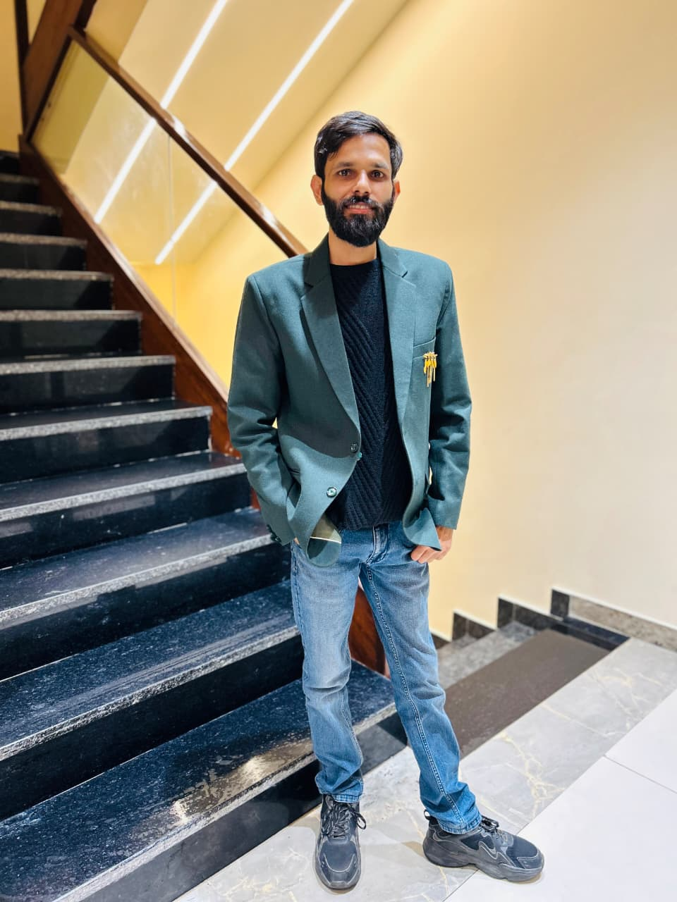

Pursuing
Ph.D. in Computer Science
Panjab University
Doctoral research focused on Artificial Intelligence, Machine Learning, and Computer Vision.
RESEARCHER • EDUCATOR • AI/ML
Researcher | Assistant Professor, Computer Science | Artificial Intelligence & Machine Learning
Research with Purpose. Teaching with Passion.
Exploring intelligent systems through machine learning, deep learning, computer vision, and research-driven applications of AI.

ABOUT
Ph.D. Researcher at DCSA, Panjab University and Assistant Professor at SACCM, Ludhiana, with interests in Artificial Intelligence, Machine Learning, Computer Vision, Research, and Teaching.
I completed my MCA from the University of Delhi in 2020 and am currently pursuing doctoral research in Computer Science. My research interests include deep learning, computer vision, agricultural AI, lightweight CNNs, and vision-based intelligent systems.
Beyond academia, I enjoy chess, long walks, and listening to podcasts.
EDUCATION
Panjab University
Doctoral research focused on Artificial Intelligence, Machine Learning, and Computer Vision.
University of Delhi
EXPERIENCE
DCSA, Panjab University
Research in AI, machine learning and computer vision, with work involving plant disease classification and deep learning architectures.
SACCM, Ludhiana
Teaching Computer Science while supporting students through practical, research-oriented learning and technical activities.
RESEARCH INTERESTS
Building intelligent systems that address practical and research-oriented problems.
Deep learning and data-driven methods for robust predictive systems.
Image classification and visual understanding using modern neural architectures.
Applying AI and computer vision to plant and crop disease detection.
Efficient deep learning architectures designed for practical deployment.
Exploring transformer-based approaches for image analysis and classification.
TECHNICAL SKILLS
PUBLICATIONS
CONTACT
For research collaboration, academic discussion, teaching opportunities, or professional enquiries, feel free to get in touch.